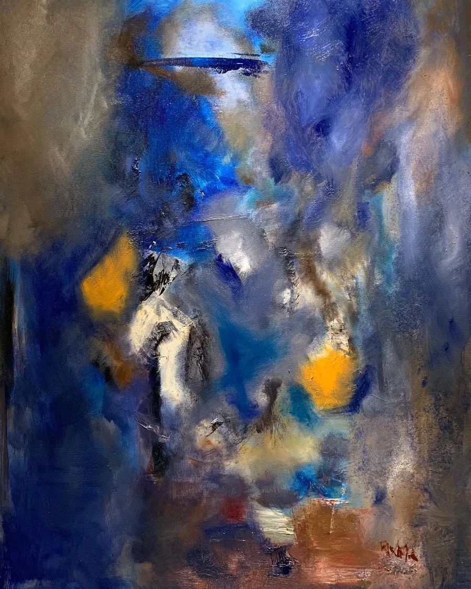
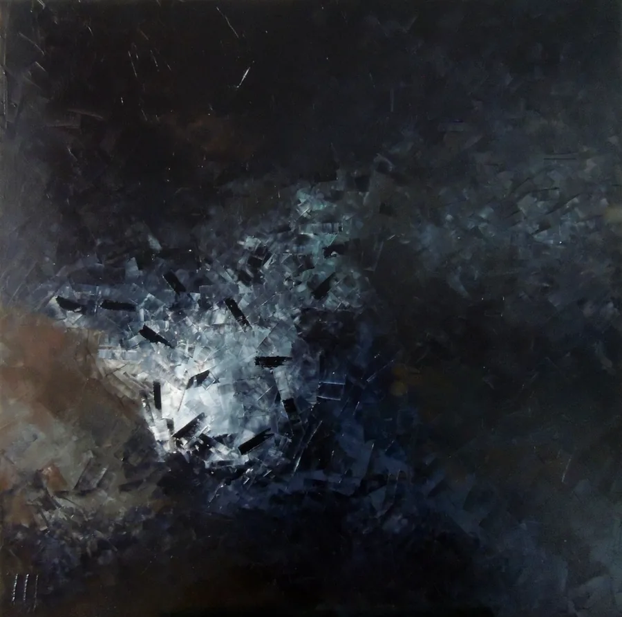
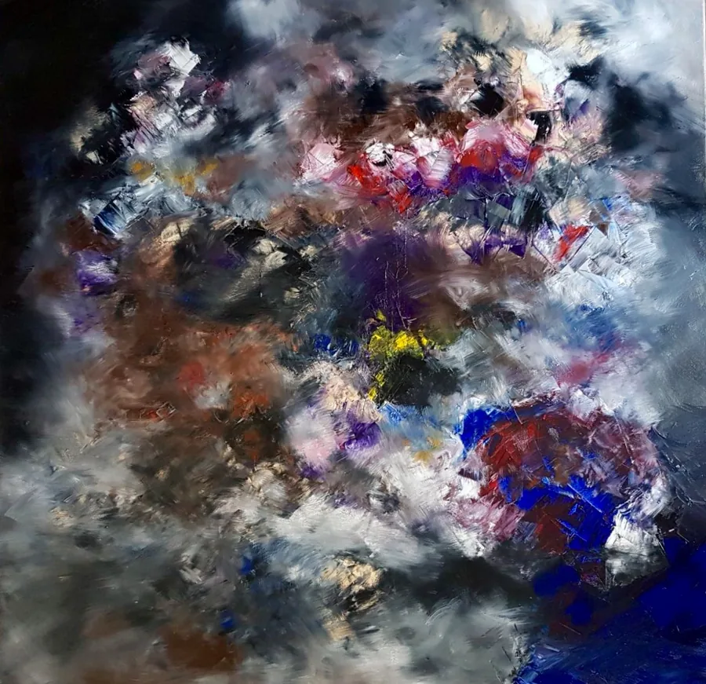
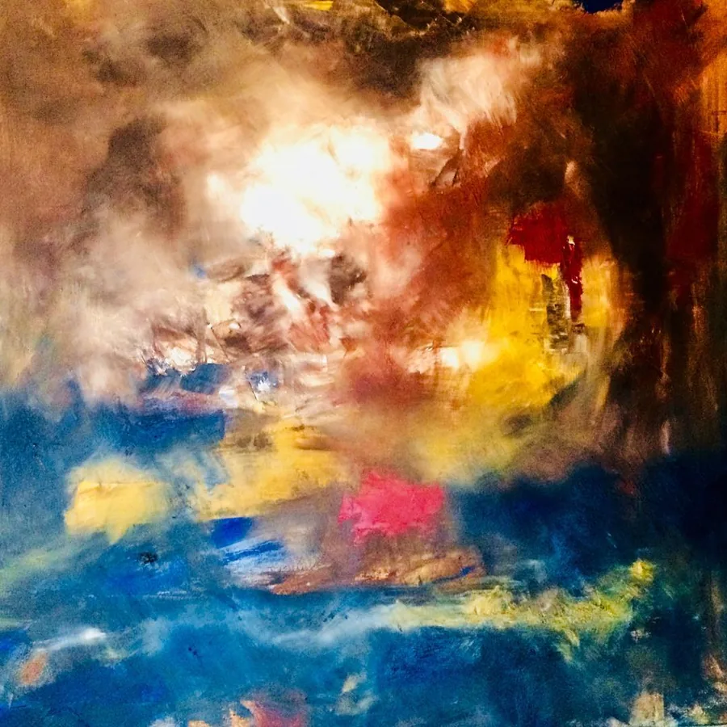
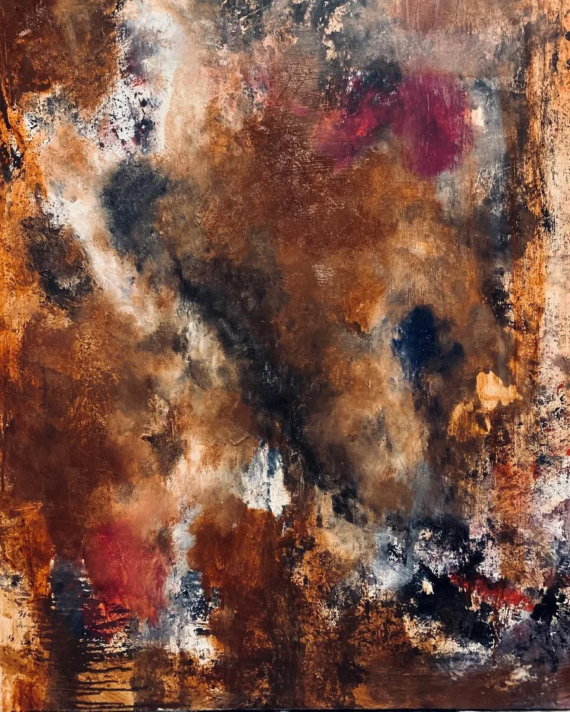
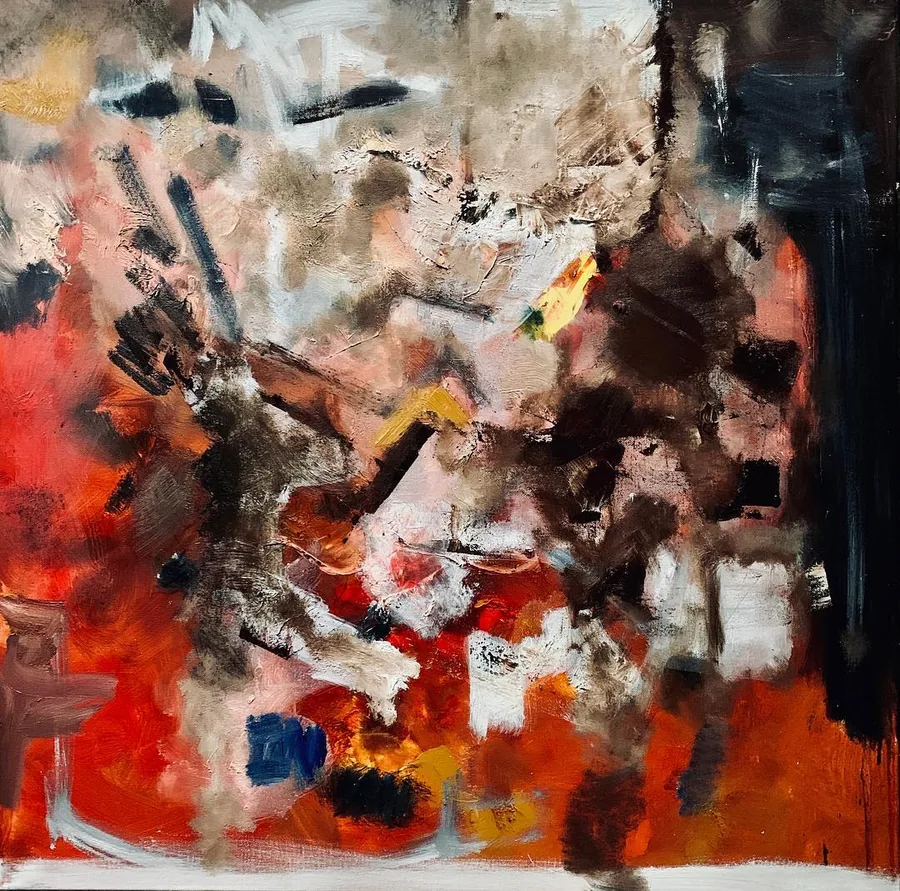
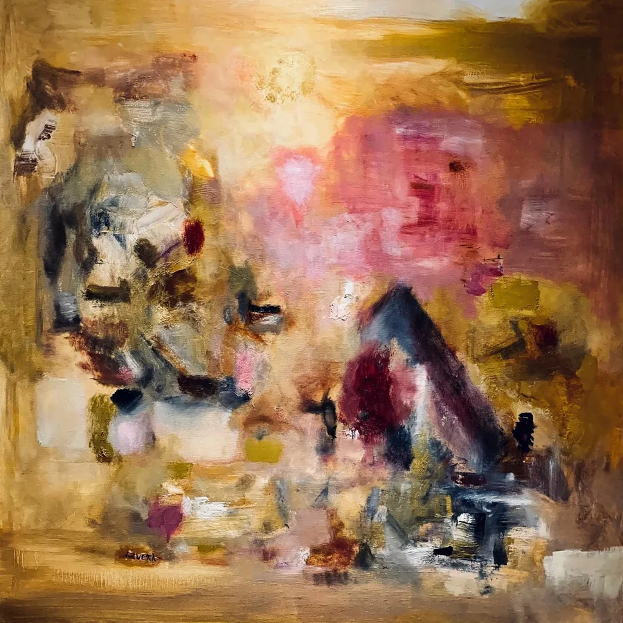
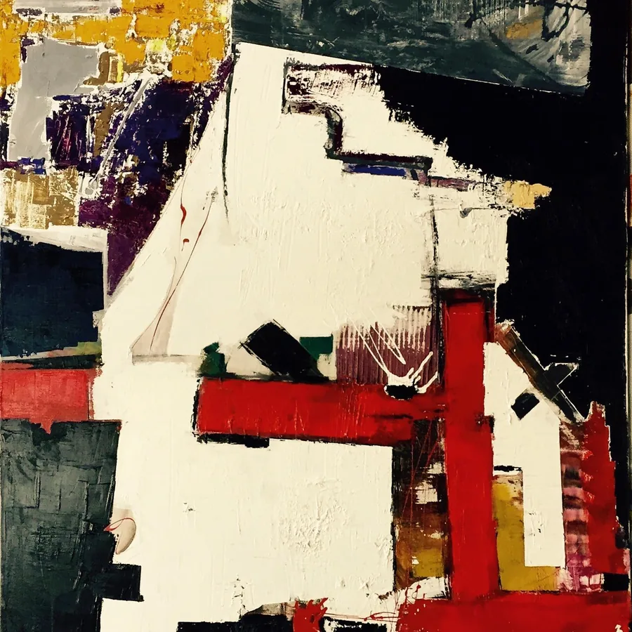
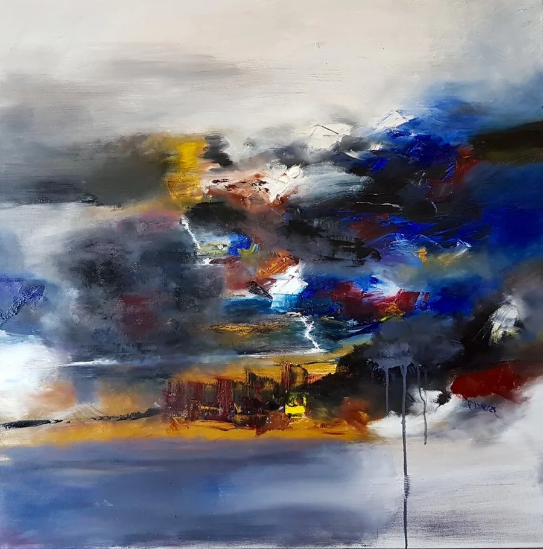

02 / 05
Sur la toile
La peinture
ne ment
jamais.
La vérité, c’est que je trouve que la peinture en soi est une forme d’art dans laquelle c’est compliqué de mentir, de faire semblant. Parce que, bien qu’on ne connaisse rien à la peinture, quand on en voit une à l’entrée d’un café ou dans un musée, on voit directement si c’est peint avec les tripes ou si c’est du faire-semblant. On peut trouver de très beaux tableaux dans des cafés, comme des horreurs dans des musées contemporains.
Traverser les couleurs
Avant la forme.
Ça gratte.
Ça accroche.
La brosse, la palette, l’épaisseur. Approcher jusqu’à perdre l’ensemble.
Entrer dans la matière


Approcher
Des couches.
Des passages.
{kind=link}
{kind=link}
{kind=link}
{kind=link}
Dans les profondeurs
L’ombre
a sa place.

Puis la couleur revient
Quelque chose
remonte.
{kind=link}

{kind=link}

{kind=link}

{kind=link}

{kind=link}

{kind=link}

Entre les formes
Laisser
de la place.
{kind=link}
{kind=link}
{kind=link}
{kind=link}
Signes et rythmes
Une écriture
sans alphabet.
{kind=link}
{kind=link}
{kind=link}
